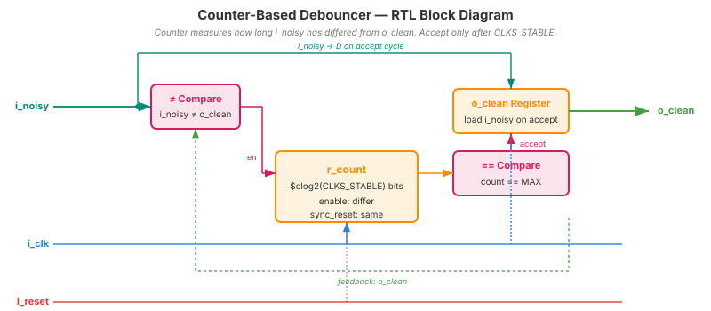
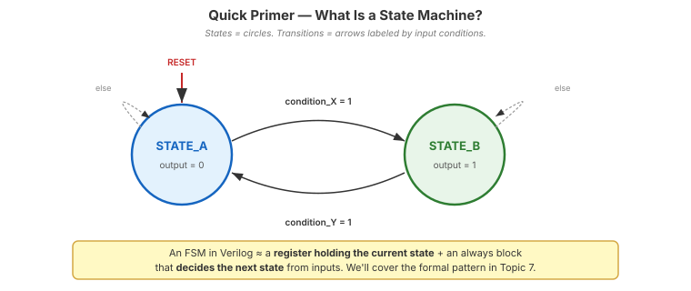
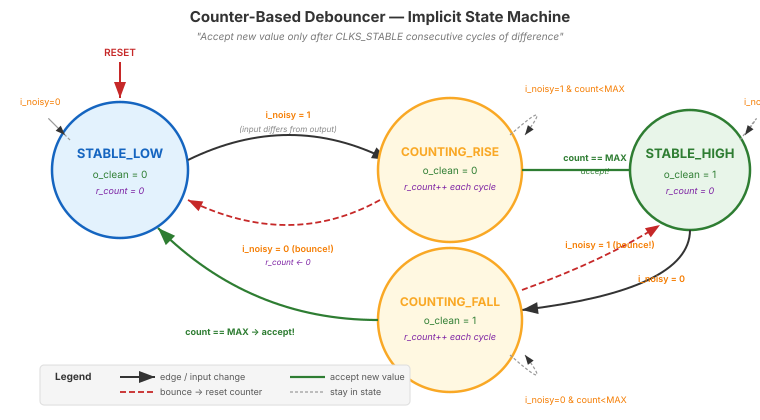
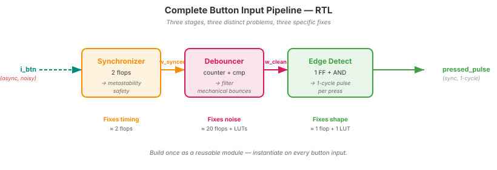

Video 4 of 4 · ~10 minutes
Dr. Mike Borowczak · Electrical & Computer Engineering · CECS · UCF
Every elevator call button. Every keyboard key you have ever pressed. Every car key fob, microwave keypad, garage door clicker, TV remote, ATM keypad, and the emergency-stop on every industrial machine. The mechanical world is loud: when two pieces of metal touch, they don't stay touching — they chatter for 5–20 milliseconds before settling. A single press is a brief burst of noise.
A passenger taps the call button once and the elevator dutifully queues “floor 7, floor 12, floor 3, floor 23, close door” and lurches nowhere. A driver pushes start once and the ECU sees seven presses. Industrial panels with un-filtered inputs have triggered emergency stops on an accidental brush. Every shipped product with a physical input has either solved this or had to issue a recall.
“I press the button, the signal goes from 0 to 1, stays at 1 until I release. My edge detector sees one rising edge per press.”
The mechanical contacts bounce on impact — making and breaking the circuit rapidly for 5–20 ms. Put a scope on a button: you'll see a burst of transitions before the signal settles. At 25 MHz, that's 125,000 to 500,000 false edges from a single press.
module debounce #(parameter CLKS_STABLE = 500_000) ( // 20ms @ 25MHz
input wire i_clk, i_reset, i_noisy,
output reg o_clean
);
reg [$clog2(CLKS_STABLE)-1:0] r_count;
always @(posedge i_clk) begin
if (i_reset) begin
r_count <= 0;
o_clean <= 1'b0;
end else if (i_noisy != o_clean) begin
// input differs from stable output — start/continue counting
if (r_count == CLKS_STABLE - 1) begin
o_clean <= i_noisy; // persisted long enough, accept
r_count <= 0;
end else begin
r_count <= r_count + 1'b1;
end
end else begin
r_count <= 0; // bounced back — reset counter
end
end
endmodule
≠ comparator gates the counter — it only ticks when input differs from stable output, (2) the persistence counter, (3) the terminal-count comparator triggers a one-shot “accept” that latches i_noisy into o_clean. Bounces force the input to match o_clean again, which resets the counter.
We haven't formally covered finite state machines yet — Topic 7 does that in depth. But the next slide reads the debouncer as an FSM, so a 60-second primer:

States (circles): the modes your design can be in. Each state typically produces a specific output.
Transitions (arrows): labeled by the input condition that triggers a state change on the clock edge. If no labeled condition matches, the FSM stays put (self-loop).
Reset: a special arrow pointing to the start state — where the FSM lives at i_reset = 1.
Implementation: one register holds the state; one combinational block computes the next state from (state, inputs). That's it. Topic 7 will formalize the coding patterns.

count == MAX (green path → accept). A bounce drops back to i_noisy = previous (red dashed → reset counter). The 4-line always block on the previous slide is exactly this graph.
// i_btn → [2-FF sync] → [debouncer] → [edge detect] → pressed_pulse
// (raw) (metastable (filter (1-cycle
// safety) bounces) pulse per press)
wire w_synced, w_clean;
reg r_clean_d1;
synchronizer u_sync (.i_clk(clk), .i_async_in(i_btn), .o_sync_out(w_synced));
debounce u_deb (.i_clk(clk), .i_reset(rst), .i_noisy(w_synced), .o_clean(w_clean));
always @(posedge clk) r_clean_d1 <= w_clean;
wire pressed_pulse = w_clean & ~r_clean_d1; // rising-edge detect
You want a 10 ms debounce window on a 12 MHz clock. What's CLKS_STABLE and the required counter width?
CLKS_STABLE = 12,000,000 × 0.010 = 120,000. Width = $clog2(120,000) = 17 bits. Verify: 2^17 = 131,072 ≥ 120,000. ✓
~5 minutes — real button, real bounces
▸ COMMANDS
cd lecture_examples/week2_day05/d05_s4_ex4/
make sim # TB injects simulated bounces
make wave
make prog # flash to Go Board
# Press SW1 — watch counter on LEDs▸ EXPECTED BEHAVIOR
Without debounce:
press SW1 once → counter +3, +7
(bounces cause multiple inc)
With debounce:
press SW1 once → counter +1
(clean single increment)▸ GTKWAVE
Signals: i_noisy · r_count · o_clean · pressed_pulse. Watch the counter climb during noise, reset on each bounce, finally hit terminal count and assert o_clean. pressed_pulse is a clean 1-cycle pulse — the “one press” event your FSM wants.
$ yosys -p "read_verilog day05_ex04_debounce.v; synth_ice40 -top debounce; stat" -q
=== debounce === (CLKS_STABLE = 500000, width = $clog2(500000) = 19)
Number of wires: 30
Number of cells: 37
SB_CARRY 18
SB_DFFESR 20 ← 19 counter + 1 clean output
SB_LUT4 9generate to instantiate an array without copy-paste.)
Ask AI: “Design a debouncer for a 100 Hz clock and 10 ms debounce. Then explain why we also need a synchronizer in front of it.”
TASK
Debouncer + justify sync upstream.
BEFORE
Predict: CLKS_STABLE=1. 1-bit counter. Sync still needed because button is async.
AFTER
AI should explain: debouncer ≠ synchronizer. Different problems, different fixes.
TAKEAWAY
A common AI error: conflating the two. Both are needed, in series.
① Mechanical switches bounce for 5–20 ms. Filter them out.
② Counter-based debouncer: accept new value only after persistent stability.
③ Full input pipeline = sync → debounce → edge detect.
④ Build once, reuse on every button input.
Q1: Why isn't a synchronizer alone enough for a button?
Q2: At 25 MHz with CLKS_STABLE = 250_000, what's the debounce window in ms?
250,000 / 25,000,000 = 10 ms.Q3: Where does the edge-detector go in the pipeline?
Q4: Could you debounce with a FIFO of samples instead of a counter?
🔗 End of Topic 5
Topic 6 · Writing the tests that protect your designs
▸ WHY THIS MATTERS NEXT
You've been running make sim all week and trusting PASS/FAIL reports. Someone wrote those testbenches for you. Topic 6 is when you start writing them yourself. Verification is larger than design at most ASIC companies — you're about to learn the craft that makes real silicon work.